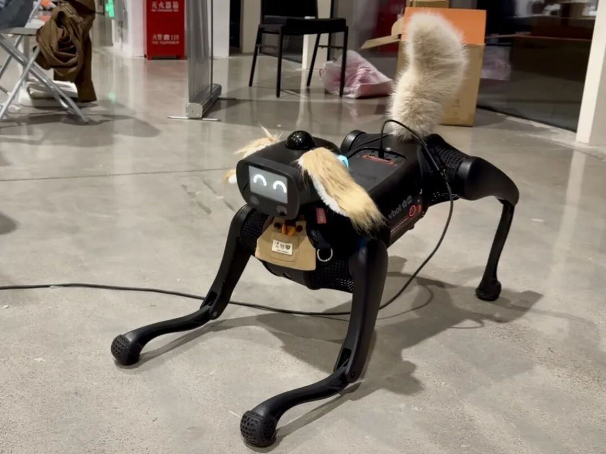

激光雷达、双目视觉与骨骼姿态感知
🎙️ 展开直播口播导语（讲师版）
“要想具身机器人真正能理解物理空间、懂得避让人群，它的眼睛和触角绝不能‘近视’！
VBOT 机身配备了一套极其豪华的端侧感知矩阵：360° 16 线激光雷达、广角双目深度相机、高频 IMU，甚至主板 NPU 已经常驻运行了实时人体检测与 17 点骨骼姿态识别！
但是，很多同学拿着网上的公开教程直接硬套，结果发现：点云把 CPU 吃满了、双目画面延迟长达 2 秒、骨骼置信度全被过滤空了！
今天这节课，我们就逐一解锁三大核心传感器数据流的最佳实践，并手把手带大家跨过‘原始 Logit 置信度转换’这道最经典的工程暗坑！”
本课学习目标
- 说清激光雷达、双目相机、NPU 骨骼、IMU 四路感知各自的话题与下游消费者
- 用
pointcloud_to_laserscan把三维点云切片成二维LaserScan，把 Nav2 的开销打下来 - 用 PyAV 把
/image_left_raw/h265字节包解成 OpenCV 可用的 BGR 帧 - 记住
/perception/poses的confidence是 Logit，先 Sigmoid 再和 0.5 比较 - 用
/imu_raw完成一次通信链路冒烟测试
一图看懂：四路感知数据流
VBOT 的端侧感知不是一个大杂烩话题，而是四条并行、互不阻塞的数据流：雷达给你空间几何，双目给你画面，NPU 给你“人”的位置与姿态，IMU 给你自己的身体状态。下游的 SLAM、Nav2 与 VLM 各取所需——先看清这张图的流向，再逐个拆解。
/vbot/lidar/point_cloudsensor_msgs/msg/PointCloud2/image_left_raw/h265H.265 / HEVC 视频流/perception/poses每人的 bbox + 17 个 COCO 关键点/imu_raw加速度 · 角速度 · 四元数姿态后面要讲的三个性能坑与语义坑，全都发生在这条链路的具体某一环上：点云吃满 CPU、双目码流挤爆总线、骨骼置信度被过滤一空。
一、360° 16 线激光雷达：建图与避障切片
机器狗腹部与顶部集成的高频激光雷达，持续以 10Hz 输出全向三维空间点云。它是一条标准的 ROS 2 话题，先认清参数再谈用法：
| 项目 | 取值 | 说明 |
|---|---|---|
| 线数 / 视场 | 16 线 · 360° 全向 | 部署在机器狗腹部与顶部的高频激光雷达 |
| 刷新率 | 10Hz | 持续输出全向三维空间点云 |
| ROS 2 话题 | /vbot/lidar/point_cloud | 点云数据的唯一入口 |
| 消息类型 | sensor_msgs/msg/PointCloud2 | 标准三维点云消息 |
| 常用坐标系 | lidar_link 或 base_link | 点云坐标系通常绑定在这两者之一 |
点云切片：把三维降成二维再喂给避障
在板载 ARM64 处理器上，如果直接拿 10 万个三维点云去计算 3D 障碍物膨胀代价，CPU 占用率会瞬间突破 70%。推荐启动 pointcloud_to_laserscan 转换节点，将高度处于 [0.1m, 0.6m] 范围内的 3D 点云切片投影为二维雷达射线扫描包（sensor_msgs/msg/LaserScan）。算法开销骤降 80%，避障反应速度提升 5 倍！
高度标尺为示意：只有落在 0.1–0.6 m 高度带内的点，才会被投影成二维雷达射线。
建图与 Nav2 适配要点
- 坐标系先对齐：点云坐标系通常绑定在
lidar_link或base_link，配置代价地图与坐标变换前先确认，避免“点云看着对、障碍物位置偏”。 - SLAM 建图吃全量：需要完整三维结构时，直接订阅
/vbot/lidar/point_cloud（PointCloud2）。 - Nav2 避障吃切片：避障只需要平面障碍，订阅
pointcloud_to_laserscan转换出的LaserScan，让 3D 膨胀代价不要落到 ARM64 上。 - 一条数据两种形态：建图与避障并不冲突，同一个雷达话题可以同时供给“全量点云”和“切片扫描”两个下游。
二、深度双目相机：H.265 硬件视频流解析
为了在板载百兆/千兆总线上稳定传输 1080P@30fps 双目画面，系统不在网络上直接广播无压缩的原始 BGR8 像素矩阵（未压缩双目码流高达 1.5 Gbps ~ 3.0 Gbps，会瞬间挤爆总线导致运动卡顿），而是采用硬件编码压缩：
| 项目 | 取值 |
|---|---|
| 核心话题 | /image_left_raw/h265 |
| 编码格式 | H.265 / HEVC 视频流 |
| 画面规格 | 1080P@30fps 双目画面 |
| 未压缩码流 | 1.5 Gbps ~ 3.0 Gbps（会挤爆总线） |
/image_left_raw/h265av.open(..., format='h265')bgr24 NumPy 矩阵Python 实时解码与去畸变流水线
使用 av（PyAV）库配合板载硬件解码加速，开箱即用：
import av
import cv2
import numpy as np
def decode_h265_frame(h265_bytes):
"""将接收到的 H.265 字节包解码为 OpenCV BGR 图像"""
container = av.open(h265_bytes, format='h265')
for frame in container.decode(video=0):
# 转换为 NumPy BGR 矩阵
img = frame.to_ndarray(format='bgr24')
return img
return None| 代码行 | 作用 |
|---|---|
av.open(h265_bytes, format='h265') | 把收到的字节包按 H.265 容器打开 |
container.decode(video=0) | 解码第 0 路视频流，逐帧产出 |
frame.to_ndarray(format='bgr24') | 转成 OpenCV 可直接使用的 NumPy BGR 矩阵 |
return None | 没有解出任何一帧时的兜底返回值 |
cv2 与 numpy 之所以在示例中导入，正是为后续处理留好接口。/image_left_raw/h265 这个名字里的 h265，就该知道必须先解码。示例采用“一包一解”的最小实现：每收到一个 H.265 字节包，就打开、解码并返回第一帧。return img 写在 for 循环内部，因此函数只会返回解出的第一帧，这也是它适合做单帧取图的写法。
三、板载 NPU 人体感知：17 点骨骼识别
| 项目 | 取值 |
|---|---|
| 订阅话题 | /perception/poses |
| 数据结构 | 每个检测到的人员边界框 + 17 个 COCO 骨骼关键点（鼻子、左/右眼、左/右耳、肩、肘、腕、髋、膝、踝） |
| 运行位置 | VBOT 计算主板 NPU，后台常驻运行 |
| 开发者动作 | 直接订阅，无需自行部署姿态估计模型 |
17 个关键点 = 5 + 6 + 6
按身体部位把这 17 个 COCO 关键点分三组记，比死记列表快得多：
- 鼻子
- 左眼
- 右眼
- 左耳
- 右耳
- 左肩
- 右肩
- 左肘
- 右肘
- 左腕
- 右腕
- 左髋
- 右髋
- 左膝
- 右膝
- 左踝
- 右踝

一旦关键点可信，动作语义就浮出来了：肩、肘、腕与髋、膝、踝之间的相对距离和夹角，足以区分下犬式、站立、深蹲这类姿态。但前提是——你得先把置信度算对。
⚠️ 最易踩坑点：关键点置信度是 Logit，非概率！
许多开发者在过滤噪点时直接写 if point.confidence > 0.5，结果发现所有点都被过滤掉了。原因很直接：官方接口返回的 confidence 字段是未经激活函数计算的原始 Logit 实数值！必须通过 Sigmoid 函数映射为 [0.0, 1.0] 区间：
同一条阈值判据，在两种读法下结论可能完全不同：
| 原始 Logit | Sigmoid 概率 | 直接写 confidence > 0.5（错误） | 先 Sigmoid 再比 0.5（正确） |
|---|---|---|---|
| −3.5 | 0.0293 | 丢弃 | 丢弃 ✅ |
| −0.8 | 0.3100 | 丢弃 | 丢弃 ✅ |
| 0.3 | 0.5744 | 丢弃 ❌ | 保留 ✅ |
| 2.2 | 0.9002 | 通过（碰巧对） | 保留 ✅ |
| 10.0 | ≈ 1.0000 | 通过（但该值已远超 1） | 保留 ✅ |
confidence > 0.5 会把它当成“低置信”全部丢掉。表里 Logit = 0.3 那一行，就是这类误杀的现场。Python 提取标准示例
订阅到 /perception/poses 后，按下法逐点做 Sigmoid，再把 x、y 与还原后的概率一起打包：
import math
def extract_keypoints(pose_msg):
"""解析 17 点骨骼关键点并还原真实置信度概率"""
parsed_people = []
for person in pose_msg.persons:
kps = []
for raw_kp in person.keypoints:
# 执行 Sigmoid 转换
prob = 1.0 / (1.0 + math.exp(-raw_kp.confidence))
kps.append({
"x": raw_kp.x, # 像素坐标 X
"y": raw_kp.y, # 像素坐标 Y
"prob": prob # 真实概率 (0.0 ~ 1.0)
})
parsed_people.append(kps)
return parsed_people注意返回结构是按人分组的：parsed_people 的每一项对应一个人，每个人是一个关键点列表。后续做动作判定时，请以“人”为单位成组使用坐标，不要把不同人的关节点混进同一个列表。
四、IMU 惯导遥测：100 Hz 的姿态反馈
高频 100Hz 的姿态反馈对于越野平稳控制与跌倒判定至关重要。它同样是一条独立话题，字段不多但每一类都有明确用途：
| 字段 | 含义 | 用途 |
|---|---|---|
linear_acceleration | 三轴加速度 | 判断冲击、跌落与身体倾斜趋势 |
angular_velocity | 三轴角速度 | 判断转向与姿态抖动 |
orientation | 四元数姿态 | 机身朝向反馈、稳住越野步态 |
/imu_raw 一条话题进行链路冒烟测试：它的报文体积小、刷新率高，能极快验证 RMW 是否真正通畅。点云和双目解码都可能掩盖链路问题，IMU 不会。- 为什么先测它：100Hz 的高频小报文，通不通几秒内就能看出来，不用等一帧 1080P 画面。
- 它证明什么：RMW 通路、话题名、QoS 订阅关系都对了，再去接点云与视频流就只剩数据处理问题。
- 它服务谁：越野平稳控制与跌倒判定这两类高频逻辑，直接吃这 100Hz 的姿态反馈。
五、🧪 小实验：Logit → 概率转换器
第三节那个“置信度全被过滤空”的坑，亲手拖一遍就再也不会忘。拖动滑块改变模型输出的原始 Logit，观察 Sigmoid 如何把它压进 [0, 1]，以及 0.5 阈值线落在哪里。
输入范围 −10 ~ +10，步进 0.1。红色阈值线固定在“概率 = 0.5”，它对应的 Logit 恰好是 0。
提示：直接拿原始 Logit 当概率用会得到错误判断，必须先做 Sigmoid。
把滑块停在 0.3 试试：这正是表里那行“误杀”的现场——原始值不到 0.5，Sigmoid 后的概率却已经有 0.5744。再拉到 2.2 看看：原始值早就越过 1，只有概率才适合和阈值比较。
六、本课小结
四路感知、四条话题、四种下游用法，一张表收拢：
| 感知流 | 话题 | 关键事实 | 下游 / 用途 |
|---|---|---|---|
| 📡 16 线激光雷达 | /vbot/lidar/point_cloud |
10Hz；sensor_msgs/msg/PointCloud2；高度 [0.1m, 0.6m] 切片 |
SLAM 建图；切片成 LaserScan 给 Nav2 避障 |
| 📷 深度双目相机 | /image_left_raw/h265 |
1080P@30fps；H.265 / HEVC；未压缩码流 1.5–3.0 Gbps | PyAV 解码为 BGR 帧，交给视觉后处理 |
| 🧍 NPU 人体感知 | /perception/poses |
人员边界框 + 17 点 COCO 骨骼；confidence 是 Logit | 骨骼动作判定（如下犬式）、VLM 理解画面 |
| 🧭 IMU 惯导 | /imu_raw |
100Hz；linear_acceleration / angular_velocity / orientation |
越野平稳控制、跌倒判定、链路冒烟测试 |
- 三档频率心里要有数：雷达 10Hz、双目 1080P@30fps、IMU 100Hz
- 点云切片只留 0.1–0.6 m 高度带：开销降 80%，避障快 5 倍
- 双目原始码流 1.5–3.0 Gbps，必须走 H.265 并先解码再处理
confidence是 Logit：先1 / (1 + e^(−logit))，再和 0.5 比- 调链路先订
/imu_raw：报文小、刷新快，几秒验证 RMW 是否通畅